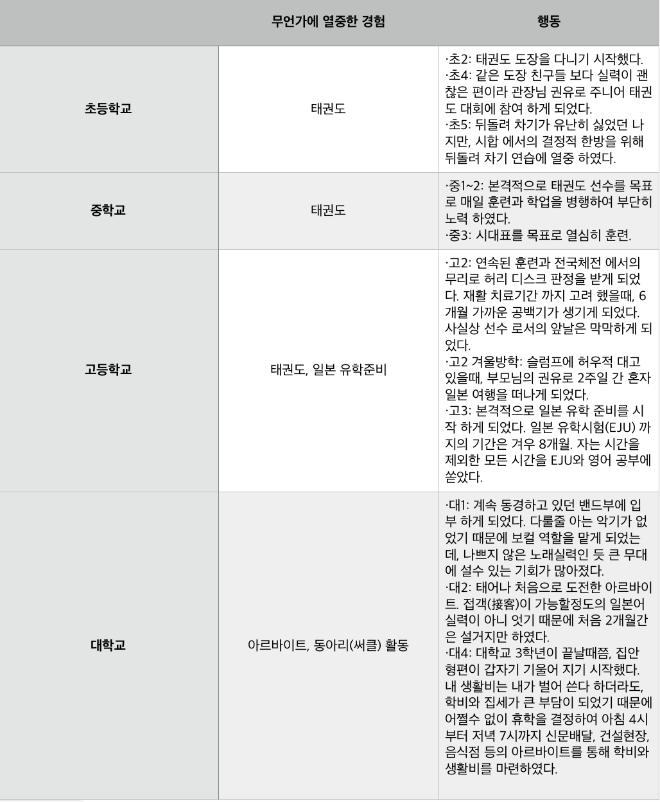
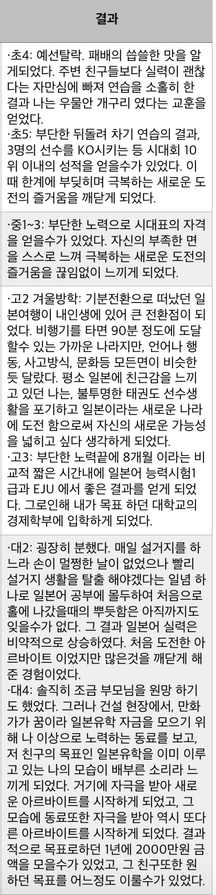
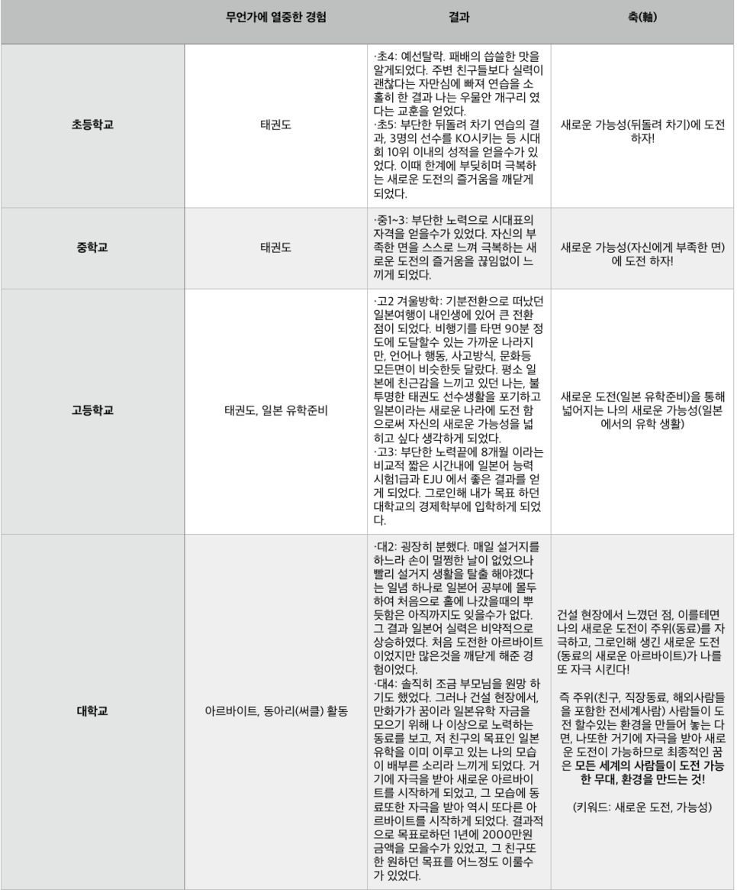
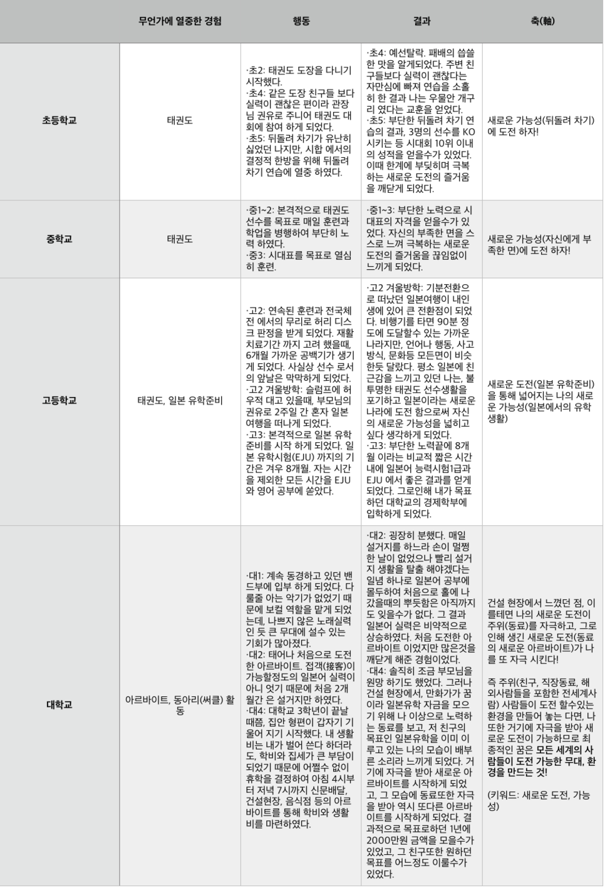

일본 취업준비 어떻게 하고 계신가요? 단순히 기업에 대한 정보를 알아보고 자소서, 필기, 면접준비.. 여기서 그치는게 대부분 아닐까요? 그러나, 일본에 있는 학생들은 취업준비에 있어서 가장 중요한게 무엇이냐 물어 봤을때 절반 이상의 학생들은 자기분석(自己分析)라 대답할 거에요. 처음에 저는 오그라들게 무슨 자기분석이냐 라고 생각 했었지만, 실제로 취직 준비하면서 자기분석 없이는 자소서, 면접 등 어느 한군데에서 계속 구멍이 생겨 버리더라고요.
결론부터 말씀 드리면, 자기소개를 하는 이유는 자신의 꿈과 축(흔히 모티베이션 이라고도합니다)를 발견하여 자신이 지원할 업계/기업을 찾는 일이라고 할수 있어요. 단순히 이 기업은 돈을 많이주고 멋있어 보이니까 지원해야지 라는 안일한 생각으로는 절대 좋은결과 낳지 못하실거라 생각해요. 그렇기 때문에 오늘은 자기분석을 어떻게 해야하는지에 대해 아주 자세히 포스팅 해보도록 할게요.
단순히 "이렇게 이렇게 하세요"라고 써 봤자 이해하기 어려울듯하여 철수라는 가상의 인물을 만들어 예를 들어가며 써 나아가도록 하겠습니다. 일관성을 위해 앞으로의 ES와 면접 관련 포스팅도 철수의 생애를 베이스로 작성하도록 하겠습니다.
본격적으로 시작하기 앞서, 밑과 같은 표를 작성해 주세요.

그 다음 어렵게 생각할 필요 없이 초, 중, 고, 대학교 시절 때 자신이 겪었던 인상 깊었던 경험들을 쭉 나열해 보세요. 오랜 시간을 거슬러 올라가야 할 필요가 있기 때문에 잘 기억이 안 날 수도, 혹은 특별한 경험을 쌓은 게 없다 하시더라도 일단은 써놓고 생각해 보도록 해요. 그럼 철수의 예로 표를 작성해 보도록 할게요. 참고로 일본의 면접시간은 굉장히 긴 편이므로(2차 면접 이상, 최소 30분) 질문이 초등학생 시절까지 거슬러 올라가는 경우가 굉장히 많았습니다.
(참고로 군대 경험까지 넣으면 굉장히 길어질듯하여 생략했습니다만, 군인 시절의 경험을 약간의 조미료를 첨가하여 ES나 면접 시에 어필하면 굉장한 플러스 요소가 된다 생각하므로 반드시 구체적으로 써보세요!) 먼저 '무언가에 열중한 경험' 과 '행동' 을 작성한 후,
그 옆에 결과를 작성해 주세요. 그 행동을 하면서 느꼈던 점을 쓰는 것도 잊지 말도록 하시 구요. 그다음에 작성해야 될 게 축(軸)인데, 여기서 축이란 쉽게 말해 자신이 그 행동을 할 수 있었던 동기(motivation)라 생각하시면 될 거 같아요. 철수의 생애로 예를 들어보면, 아래와 같다 할 수 있어요.
(급히 작성하여 오그라드는 점 등이 있을 거라 생각해요. 그 점은 양해 부탁드립니다. ) 대충 느낌이 오시나요? 먼저 각 학창 시대별 인상 깊었던 경험들을 나열한 후, 그 경험들을 통해 얻어진 결과와 느낀 점을 쓴 다음, 자신의 축이 무엇이었던지를 곰곰이 생각해 보세요. 철수의 예를 들면 '새로운 가능성에 도전' 이 원래의 축이었지만 시간에 따라 조금씩 변화하는 걸 알 수가 있어요. 최종적으로는 자신의 동기부여(자극)를 위해 여러 사람이 도전 가능한 환경, 무대를 만드는 게 축이자 꿈이 되었고요.
즉 자기분석을 하는 이유는, 자신의 꿈이 무엇이며 그 꿈은 어떠한 경험들을 통해 이루어졌나를 파악하기 위해서에요. 그다음이 그 꿈을 이루기 위한 업계, 기업이 어디인가 이고요. 이 자기분석을 통해 자기 자신을 완벽히 이해한 후에 업계, 기업 분석이 이루어져야 되는 거죠.
끝으로
자기분석이라는 게 한두 시간 만에 끝낼 수 있는 게 아니라고 생각해요. 정말 오랜 시간을 들일 필요가 있으므로 서두르지 마시고 차근차근 쓰다 보면 자신조차 잊고 있던 목표나 꿈을 발견할 수 있다고 생각합니다. 우리나라처럼 바로 실전에 투입 가능한 인재를 찾는 게 아닌 그 사람의 목표, 꿈, 됨됨이 등을 파악해 채용하여 키워나가는(育てる) 일본 기업 문화가 이러한 자기분석이라는 단계(?)를 만들지 않았나 생각합니다. 이상으로 글 줄이도록 하겠습니다. 철수의 축(軸)처럼 저의 글이 여러분의 가능성을 조금이라도 넓힐 수 있길 기원합니다.